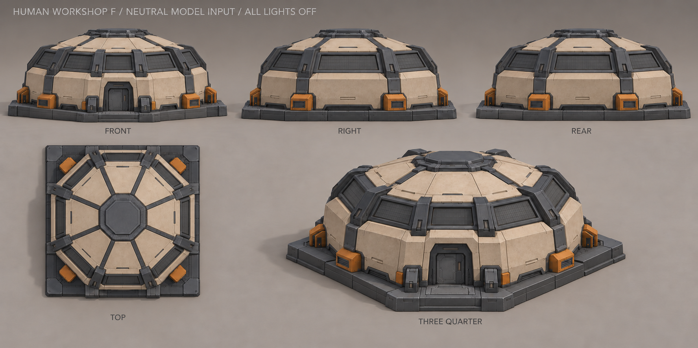
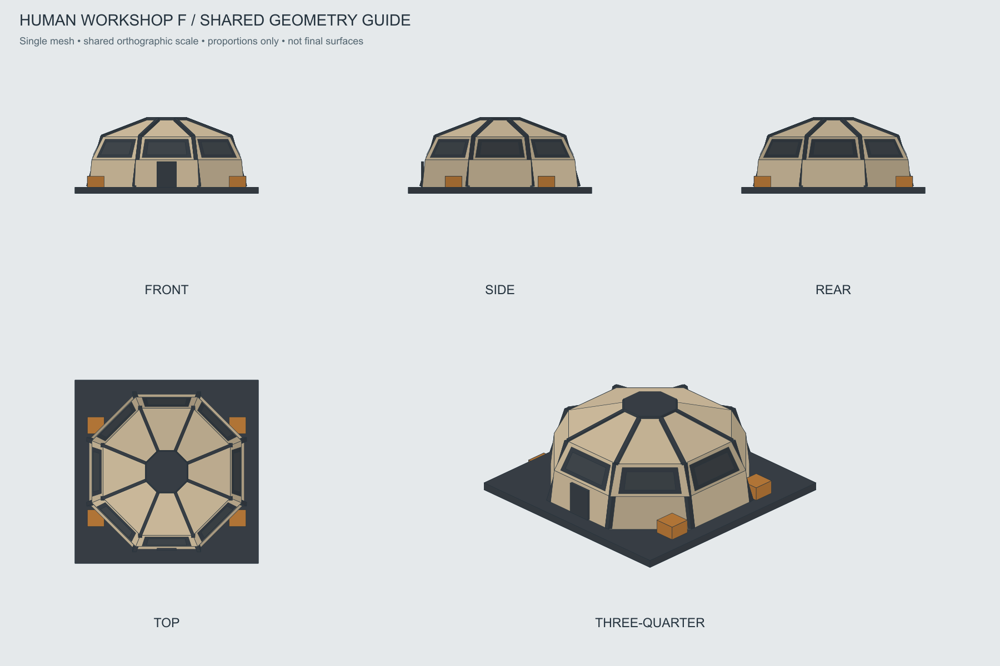

Мастерская · F «Световой пояс»
Выбрана 28 октября 2026. Низкий гранёный корпус, исследование читается по последовательной подсветке крупных панелей.
Паспорт моделирования и света · OBJ-каркас · Маски и состояния · История A–H
Нейтральный основной вид — для моделирования
Все лампы выключены. Линзы, рамки и обычная окраска сохранены. Файлы для AI-моделирования.

Пять нейтральных ракурсов — для моделирования

Проекции одной геометрии

Отдельное превью эффекта — не вход для текстурирования
Светящийся художественный концепт · Старая светящаяся версия листа. Эти изображения не передавать в AI-моделирование.
Геометрия неподвижна. Загораются группы панелей. Тайминг условный; это схема, эффект в игре ещё не реализован.
Контрольные восемь световых секторов — рабочая разбивка единой модели; окончательные оболочки сверяются с выбранным видом.